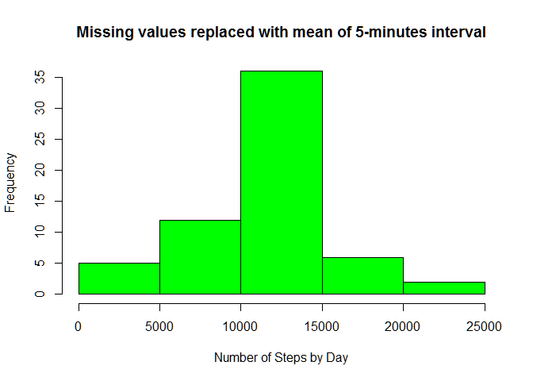

Reproducible Research: Peer Assessment 1
Loading and preprocessing the data
Unzip the csv file from the archive
unzip("activity.zip")Read the csv file
ActivityData <- read.csv("activity.csv",header = TRUE)Set the data types of the fields
ActivityData$steps <- as.numeric(ActivityData$steps)
ActivityData$date <- as.Date(ActivityData$date)
ActivityData$interval <- as.numeric(ActivityData$interval)What is mean total number of steps taken per day?
Create an aggregated dataset with the sum of steps by day
StepsByDay <- aggregate(steps ~ date, FUN = sum, data = ActivityData)Create the histogram
hist(StepsByDay$steps,
col = "Blue",
main = "Frequency of Total Number of Steps Taken Each Day",
xlab = "Number of Steps by Day",
ylab = "Frequency")
Calculate the mean of the steps by day
mean(StepsByDay$steps, na.rm = TRUE)## [1] 10766.19Calculate the median of the steps by day
median(StepsByDay$steps, na.rm = TRUE)## [1] 10765What is the average daily activity pattern?
Create an aggregated dataset with the mean of steps by interval
StepsByInterval <- aggregate(steps ~ interval, FUN = mean, data = ActivityData)Create the line chart
plot(StepsByInterval$steps ~ StepsByInterval$interval,
col = "Blue",
type = "l",
main = "Average Daily Activity Pattern",
xlab = "5-minute interval",
ylab = "Avg Nbr of Steps by Day")
Imputing missing values
Calculate the total number of missing values in the dataset
sum(is.na(ActivityData))## [1] 2304Create a new dataset where the missing values are filled in with the means for the relevant 5-minute interval
ActivityDataNoNA <- ActivityData
ActivityDataNoNA$steps[is.na(ActivityDataNoNA$steps)] <- tapply(ActivityDataNoNA$steps, ActivityDataNoNA$interval, mean, na.rm = TRUE)
StepsByDayNoNA <- aggregate(steps ~ date, FUN = sum, data = ActivityDataNoNA)Create the histogram
hist(StepsByDayNoNA$steps,
col = "Green",
main = "Missing values replaced with mean of 5-minutes interval",
xlab = "Number of Steps by Day",
ylab = "Frequency")
Calculate the mean of the steps by day (no impact of imputing the missing data)
mean(StepsByDayNoNA$steps, na.rm = TRUE)## [1] 10766.19Calculate the median of the steps by day (the median is the same as the mean because of imputing the missing data)
median(StepsByDayNoNA$steps, na.rm = TRUE)## [1] 10766.19Are there differences in activity patterns between weekdays and weekends?
Create a new factor variable indicating whether a given date is a weekday or weekend day.
ActivityDataNoNA$date <- as.Date(ActivityDataNoNA$date)
ActivityDataNoNA$daytype <- as.factor(ifelse(weekdays.Date(ActivityDataNoNA$date) %in% c("Saturday", "Sunday"), "weekend", "weekday"))Create an aggregated dataset with the sum of steps by day
StepsByIntervalWeekDay <- aggregate(ActivityDataNoNA$steps, by = list(ActivityDataNoNA$daytype, ActivityDataNoNA$interval), FUN = mean, data = ActivityDataNoNA)
names(StepsByIntervalWeekDay) <- c("daytype", "interval", "steps")
require(ggplot2)## Loading required package: ggplot2Create the panel plot with the two line charts
ggplot(StepsByIntervalWeekDay, aes(interval, steps))+
geom_line() +
theme_bw() +
ylab("Number of Steps by Day") +
ggtitle("Average Daily Activity Pattern by Daytype") +
facet_grid(daytype ~ .)